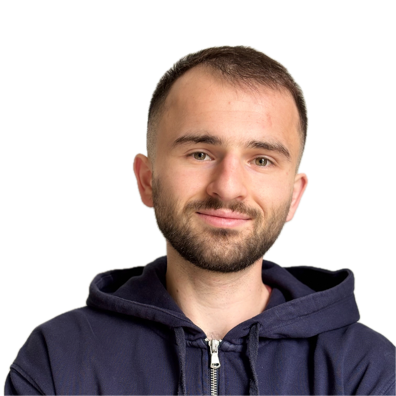

EN

CLÉMENT FOLTRAN
AI & Mobile Engineer
Paris / Genève. Freelance, ouvert à l'hybride.
Ingénieur mobile et full-stack (7 ans) désormais spécialisé en IA agentique : conception d'agents LLM dotés d'outils, de mémoire et d'actions sécurisées, et intégration dans des applications en production.
IA : agents LLM, tool calling, mémoire d'agent, MCP, human-in-the-loop
Mobile : Flutter, BLoC, Drift, Patrol
Backend : TypeScript, Kafka, PostgreSQL
Cloud & DevOps : Azure, Kubernetes, Docker, Terraform, GitHub Actions
Email /
LinkedIn /
GitHub
Expériences
AI & Mobile Engineer (freelance),
Pluxee (Juin 2025 - Aujourd'hui)
Pluxee (anciennement Sodexo Benefits & Rewards) est une plateforme mondiale d'avantages salariés opérant dans 28 pays. Je conçois et développe des systèmes d'IA agentique et l'infrastructure qui les connecte aux services de Pluxee, tout en contribuant à l'application globale Pluxee (Flutter) et à son backend.
- Conception et développement de Lea, à mon initiative : un agent IA de support client (Azure Foundry, outils, mémoire) visant à réduire les coûts du support ; présenté à la direction technique et architecture défendue devant le comité IA de Pluxee
- Actions sensibles protégées par des workflows de confirmation déterministes (sécurité human-in-the-loop)
- Poursuite du développement Flutter de l'application globale sur plusieurs marchés européens, et travaux backend sur les backoffices globaux (Spring Boot, Kafka)
Stack : Agents LLM, MCP, Flutter, BLoC, Spring Boot, Kafka, Docker, Angular, Bitrise, Okta, Azure
Lead Mobile Engineer (freelance),
Paratus (Novembre 2025 - Avril 2026)
Paratus est une entreprise de médecine spatiale développant des outils médicaux pour les missions spatiales de longue durée. J'ai dirigé l'architecture et le développement d'ISS4Mars, un package Flutter pour les procédures médicales à bord de la Station Spatiale Internationale.
- Définition de l'architecture technique globale du package, du modèle de données à la couche UI
- Conception d'un schéma de base de données polymorphique unifié avec Drift pour une modélisation flexible des données de procédures
- Rédaction d'une stratégie de tests complète couvrant les tests unitaires, d'intégration et E2E avec Patrol
- Gestion de la livraison du projet en collaboration étroite avec l'équipe Paratus, coordination des priorités et décisions techniques
Stack : Flutter, Dart, BLoC, Drift, Patrol
Lead Mobile Engineer (freelance),
Infinit (Mai 2023 - Avril 2025)
Plateforme mobile et web aidant les concessionnaires à sourcer et financer leur stock (jusqu'à 500 k€), présente dans 11 pays.
- Revue de code et mentoring d'une équipe de 5 développeurs mobiles
- Développement from scratch du produit de financement B2C pour les particuliers, lancé dans 3 pays
- Mise en place des tests E2E (Patrol), de la CI/CD (GitHub Actions) et d'un workflow design Widgetbook partagé entre designers et développeurs
Stack : Flutter, flutter_hooks, BLoC, Patrol, Widgetbook, .NET, PostgreSQL, Azure, Terraform, GitHub Actions
Ingénieur logiciel (freelance),
Microport (Juin 2022 - Mai 2023)
Fabricant de dispositifs médicaux (pacemakers, holters).
- Développement de SMARTTOUCH, l'application tablette utilisée par les cardiologues pour programmer les implants, réaliser des diagnostics et ajuster les thérapies, selon les exigences qualité des dispositifs médicaux
- Travail en direct avec des experts en cardiologie pour concevoir les fonctionnalités
Stack : Flutter, flutter_hooks, BLoC, Azure DevOps
Ingénieur R&D (CDI),
Ateme (Décembre 2019 - Juin 2022)
Entreprise de technologies vidéo (anciennement Anevia, fondée par les créateurs de VLC).
- Conception from scratch d'une plateforme de gestion de 800 boîtiers de diffusion OTT dans des hôtels, hôpitaux et bateaux de croisière
- Conception from scratch de Pilot, une application web de gestion d'instances de cache vidéo sur plusieurs clusters Kubernetes, utilisée par MyTF1 et MyCanal pour le direct et la VOD
Stack : Angular, Go, Kubernetes, Docker, PostgreSQL, Cypress, GitLab CI
Co-fondateur, Stoke (Fév 2018 - Jan 2019)
Plateforme connectant les invendus des marques de prêt-à-porter aux recycleries et upcycleurs. 1re place au HEC Design Thinking, incubé 1 an à Station F.
Projets
Sapiensrank.com (Juin 2026 - Aujourd'hui) : jeu mobile de fitness où les données de l'app santé (pas, sommeil, fréquence cardiaque) deviennent une monnaie pour conquérir des territoires entre amis.
Deckart.xyz (Septembre 2024 - Septembre 2025) : application d'aide à la mémorisation pour collégiens (quiz, flashcards, musique), plus de 200 utilisateurs actifs.